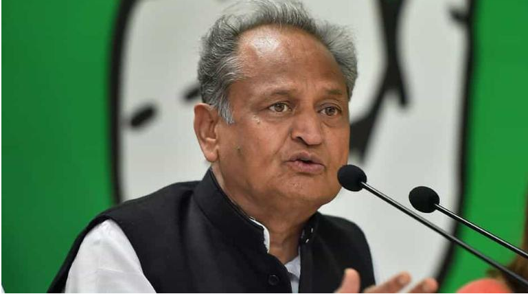

POLITICAL HEADLINES
Rahul Gandhi attacks Modi, says he "divided" country READ MORE... |
|
Congress Goes To Top Court Over Election Body 'Inaction' On PM's Speeches READ MORE... |
 |
|  | Modi govt made Kovind president because of his caste: Ashok Gehlot READ MORE... |